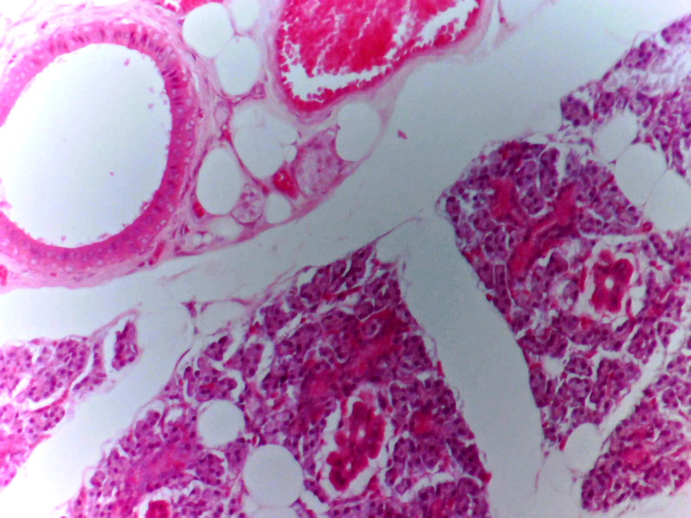

Lâmina 38 · Sistema digestório
Glândula submandibular

Toque na imagem para ampliar. No computador, use as setas do teclado para trocar de imagem.
Lâmina 38 · Sistema digestório

Toque na imagem para ampliar. No computador, use as setas do teclado para trocar de imagem.